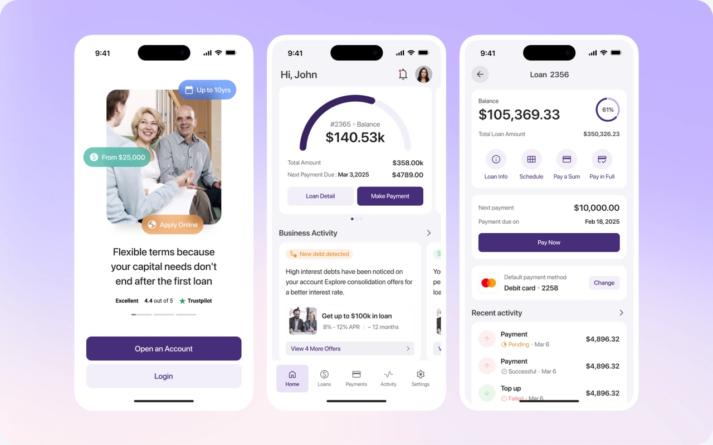
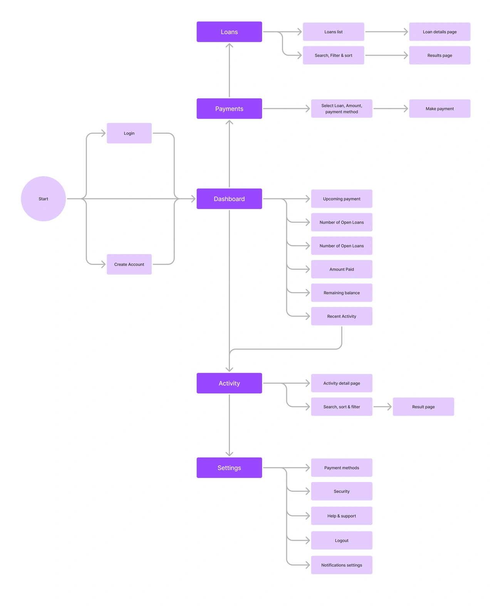
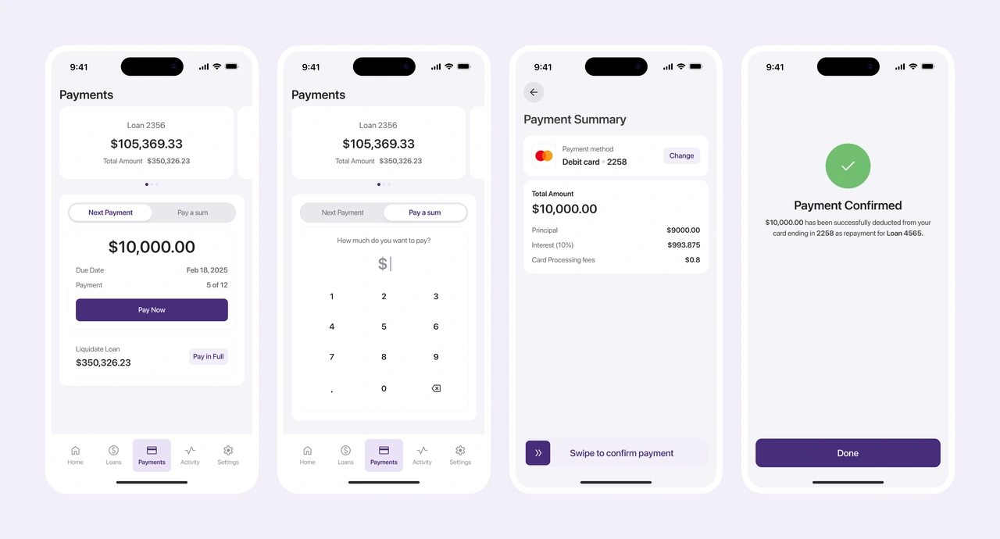

A new direction for an established lending platform
The company built its lending business on a mature web platform for small businesses. Leadership wanted to explore if a mobile app could better serve owners and attract younger customers. Instead of starting development, the goal was to validate the product direction with design and prototypes.

Constraints
The existing experience was designed for desktop and reflected years of product growth. Core lending workflows contained more information than was practical on a mobile device.
The challenge was to simplify complex financial tasks while preserving the trust, clarity, and detail borrowers needed to apply for loans, manage multiple loans, and make repayments.
My Role
I led the mobile product design from discovery through prototype validation.
Responsibilities
- Audited the existing web platform
- Mapped user journeys
- Simplified lending workflows
- Designed the complete mobile experience
- Built interactive prototypes for stakeholder reviews
Mapping the Product
I began by mapping the core borrower journeys and defining the application's structure. This created a clear foundation for navigation before moving into interface design.

UX flow diagram / Information architecture.
Exploring Solutions
Each major section of the application was explored through multiple mid fidelity concepts. Rather than committing to a single direction, I tested different layouts and information hierarchies before selecting the strongest approach with stakeholders.
Multiple concepts were evaluated before refining the final experience.
Final Experience
The selected concepts were developed into a complete high fidelity prototype covering every core borrower journey. This allowed stakeholders to experience the product before any engineering investment.


The onboarding flow quickly introduces the platform before taking users to a dashboard that surfaces loan status, repayments, and account activity at a glance.


The application experience breaks a traditionally long lending process into manageable steps, helping borrowers complete applications comfortably on mobile.

Users can manage multiple loans from one account, making it easy to switch between businesses or financing products while tracking balances, repayment schedules, and loan status.

Repayment flows were designed to reduce friction while giving borrowers a clear understanding of upcoming payments and outstanding balances.

Settings centralize account management, security, notifications, and personal preferences in a familiar mobile experience.
Outcome
The project delivered a complete mobile experience covering every major borrower journey, along with an interactive prototype used to evaluate the product with leadership.
Following stakeholder reviews, the concept received approval from the CTO and the company moved forward with investing in development.
Impact
- Complete mobile product designed end to end.
- Core lending workflows validated through interactive prototypes.
- Approved for engineering investment and development by leadership.